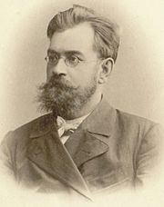
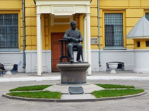

Биография Василия Ивановича Разумовского
Российский и советский хирург, доктор медицины, Герой Труда. Автор около 150 научных работ.
Родился 27 марта (8 апреля) 1857 года в деревне Ефимовка Бузулукского уезда Самарской губернии (ныне — в Курманаевском районе Оренбургской области).
В 1880 году окончил медицинский факультет Императорского Казанского университета. Профессор хирургии в Казанском университете с 1887 года.
В 1893 году профессор впервые посетил Кавказские Минеральные Воды в качестве туриста. С 1896 года по приглашению курортной администрации в летний период работал платным консультантом-хирургом. В 1896-1898 годы останавливался в Железноводске, позже в Пятигорске в частной лечебнице доктора Ржаксинского.
С 1902 по 1924 годы Василий Иванович редко приезжал на КМВ, в основном, в качестве туриста.
Разумовский был одним из основателей и первым ректором Императорского Саратовского университета (1909—1912), ректором Тбилисского государственного университета (1918), и первым ректором Бакинского государственного университета (1919).
Из постановления правительства Азербайджанской Демократической Республики от 8 сентября 1919 года:
"Избранных университетской комиссией заслуженного профессора по кафедре оперативной хирургии В. И. Разумовского и профессора по кафедре патологической анатомии И. И. Широкогорова утвердить: первого — ректором, а второго — деканом медицинского факультета Бакинского государственного университета."
После 1920 года он вернулся в Саратовский государственный университет и проработал там до 1930 года. В 1930 году отошёл от преподавания, но продолжал организаторскую и врачебную деятельность как консультант курортного дела на Кавказских минеральных водах.
Умер 7 апреля 1935 года в городе Ессентуки. Могила располагается на Братском кладбище города. В 1990-е годы барельеф на могильной плите хирурга был украден. В 2012 г. по инициативе Саратовского государственного университета при содействии спонсоров из Самары барельеф был воссоздан и установлен заново.